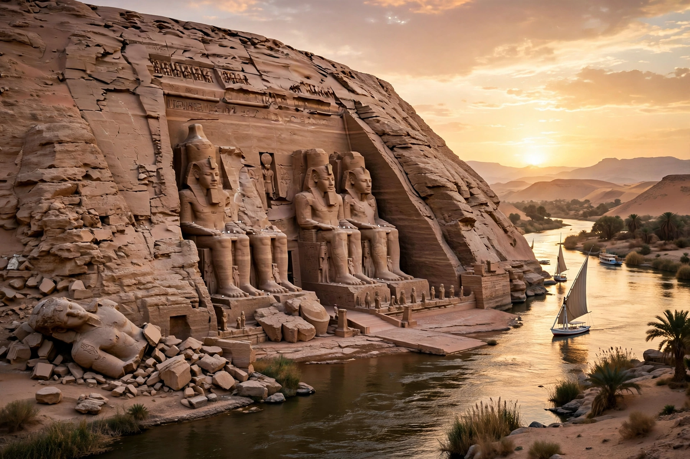

| Nubian Monuments | |
|---|---|
| Type | Cultural |
| Criteria | (i), (iii), (vi) |
| Designated | 1979 (World Heritage List) |
| Location | Lower Nubia, Egypt |
| Key sites | Abu Simbel, Philae, Kalabsha, Amada, Wadi es-Sebua |
The Nubian Monuments from Abu Simbel to Philae are a UNESCO World Heritage Site in Lower Nubia, Egypt, inscribed in 1979. The site encompasses a series of ancient Egyptian temples and monuments along the Nile, including the rock temples of Abu Simbel and the island temple complex of Philae.
In the 1960s, construction of the Aswan High Dam threatened to submerge the monuments beneath the rising waters of Lake Nasser. UNESCO launched an unprecedented international campaign, appealing for funds from more than 50 countries. Between 1960 and 1980, some 22 monuments and architectural complexes were dismantled, moved to higher ground, and reassembled — most famously the Abu Simbel temples, which were cut into blocks of up to 30 tons and rebuilt 65 metres above their original location. The campaign is credited with inspiring the 1972 World Heritage Convention.
The listed area includes the temples of Abu Simbel built by Ramesses II, the Temple of Isis at Philae, the temples of Kalabsha, Amada, Derr, Wadi es-Sebua, and the rock tombs and fortresses of the region. Several rescued temples were donated to participating nations and now stand in museums in Madrid, Turin, Leiden, and New York.
See also: Abu Simbel, Philae, Lake Nasser, UNESCO.